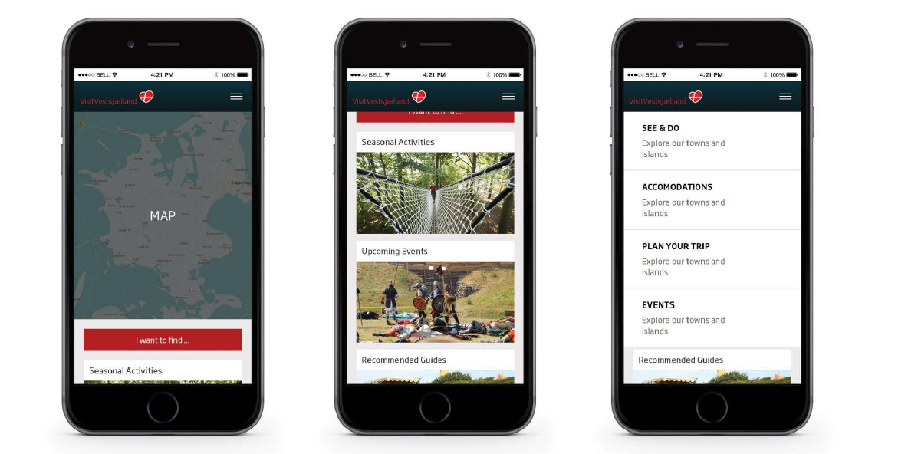

Visit Vestsjcelland, requested a content strategy that will make Vestsjælland more appealing and bring more visitors to the region. The research process that was carried out included desk research, interviews and usability test. Investigation showed that the main target group of the website are International families with small children and couples trave ling without offspring
The solution is therefore to redesign the navigation of the website . Making the menu shorter and more compact so that it is easier to understand and adding additional features that are more relevant to the visitor. The content will be integrated with already existing social media accounts, aiming to create the overall visual frame .

Download the project details
For more details about this project a report had been added download this to view what the project was about but also who worked on the project